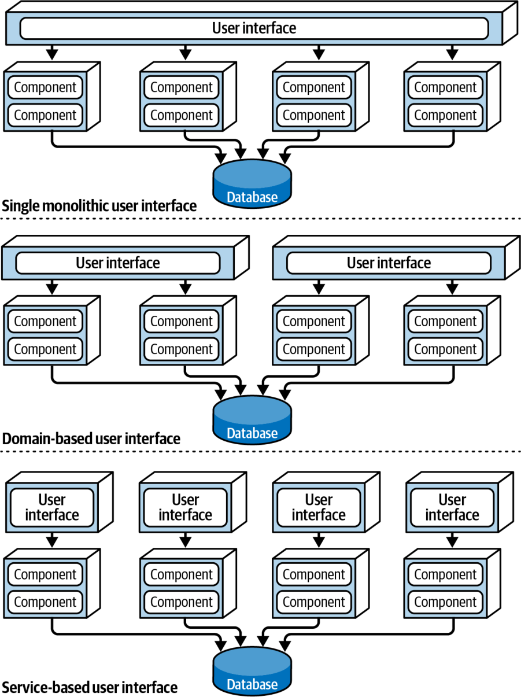
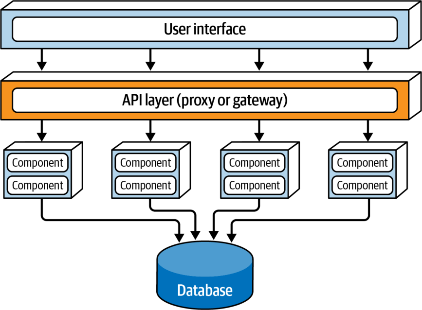

معماری مبتنی بر سرویس گونهای ترکیبی از سبک معماری میکروسرویسهاست و، عمدتاً به دلیلِ انعطافپذیریاش، یکی از عملگراترین سبکهای موجود به شمار میآید. هرچند معماری مبتنی بر سرویس توزیعشده است، سطحِ پیچیدگی و هزینهٔ دیگر معماریهای توزیعشده (مانندِ میکروسرویسها یا معماری رویدادمحور) را ندارد و همین آن را به گزینهای محبوب برای برنامههای کسبوکاری تبدیل کرده است.
توپولوژی
توپولوژیِ پایهٔ معماری مبتنی بر سرویس از ساختاری توزیعشده و کلانلایهای (macro-layered) پیروی میکند که از یک رابط کاربریِ جداگانهمستقرشده، سرویسهای درشتدانه و دورِ جداگانهمستقرشده و، بهصورتِ اختیاری، یک پایگاهدادهٔ تکپارچه تشکیل میشود.
هرچند شکل ۱۴-۱ توپولوژیِ پایهٔ این سبک را نشان میدهد، این توپولوژی ممکن است تفاوتهای بسیاری داشته باشد، از جمله بهکارگیریِ رابطهای کاربریِ جداگانه و پایگاهدادههای جداگانه. این فصل این گونههای توپولوژی را بهتفصیل شرح میدهد.
سرویسها در این سبک معماری معمولاً نمایانگرِ یک حوزه یا زیرحوزهٔ مشخص در سیستماند و از این رو سرویسهای حوزهای نامیده میشوند. سرویسهای حوزهای عموماً درشتدانهاند و بخشی از کارکردِ سیستم را بازنمایی میکنند (مانندِ انجامِ سفارش یا ارسالِ سفارش). این سرویسها معمولاً از یکدیگر مستقلاند و جداگانه مستقر میشوند. سرویسها معمولاً به همان شیوهای مستقر میشوند که هر برنامهٔ تکپارچهای مستقر میشود، بنابراین به کانتینرسازی (containerization) نیازی ندارند (هرچند استقرارِ یک سرویسِ حوزهای در کانتینری مانندِ Docker یا Kubernetes قطعاً یک گزینه است). هنگامِ بهکارگیریِ یک پایگاهدادهٔ تکپارچهٔ واحد، معمار باید بکوشد شمارِ سرویسهای حوزهای را به کمترین حد برساند (ما توصیه میکنیم بیش از ۱۲ نباشد) تا از مشکلاتِ کنترلِ تغییر (change control)، مقیاسپذیری و تحمل خطا پرهیز شود.
شکل ۱۴-۱. توپولوژیِ پایهٔ سبک معماری مبتنی بر سرویس
معمولاً هر سرویسِ حوزهای بهصورتِ یک نمونهٔ واحد مستقر میشود. اما معماران گاهی، بر پایهٔ نیازهای سیستم به مقیاسپذیری، تحمل خطا و توان عملیاتی، چندین نمونه از یک سرویسِ حوزهای میسازند. این کار معمولاً به نوعی قابلیتِ توازنبار میانِ رابط کاربری و سرویسِ حوزهای نیاز دارد تا رابط کاربری به یک نمونهٔ سالم و در دسترس از سرویس هدایت شود.
رابط کاربری از راهِ یک پروتکلِ دسترسی دور، که معمولاً REST است، به سرویسها دسترسی دارد. گزینههای دیگر عبارتاند از پیامرسانی، فراخوانیِ رویهٔ دور (remote procedure call یا RPC)، یک لایهٔ API با پراکسی (proxy) یا دروازه، یا حتی SOAP. اما در بیشترِ موارد، رابط کاربری الگوی service locator را در خود تعبیه کرده است تا بتواند مستقیماً به سرویسها دسترسی داشته باشد؛ الگوی service locator را میتوان درونِ یک دروازهٔ API (API Gateway) یا پراکسی نیز تعبیه کرد.
معماری مبتنی بر سرویس معمولاً از یک پایگاهدادهٔ تکپارچهٔ مشترکِ مرکزی استفاده میکند. این امر به سرویسها امکان میدهد درست مانندِ یک معماری لایهایِ تکپارچهٔ سنتی، از پرسوجوها و پیوندهای (joins) SQL بهره بگیرند. به دلیلِ شمارِ اندکِ سرویسهای حوزهای که معمولاً در این سبک معماری یافت میشوند، تمامشدنِ اتصالهای پایگاهدادهٔ در دسترس بهندرت مشکلساز میشود. اما مدیریتِ تغییرات در پایگاهداده میتواند چالشبرانگیز باشد. بخش «توپولوژیهای داده» در صفحهٔ ۲۱۵ فنونی را برای پرداختن به تغییرات پایگاهداده و مدیریتِ آنها در معماری مبتنی بر سرویس شرح میدهد.
ویژگیهای خاصِ سبک
از آنجا که سرویسهای حوزهای در معماری مبتنی بر سرویس عموماً درشتدانهاند، هر سرویسِ حوزهای معمولاً با سبک معماری لایهای طراحی میشود که از یک لایهٔ API Facade، یک لایهٔ Business و یک لایهٔ Persistence تشکیل شده است. رویکردِ طراحیِ محبوبِ دیگر، افرازِ هر سرویسِ حوزهای به زیرحوزههاست، مشابهِ سبک معماری تکپارچهٔ ماژولار (فصل ۱۱ را ببینید). هر دو رویکرد در شکل ۱۴-۲ نشان داده شدهاند.
شکل ۱۴-۲. گونههای طراحیِ سرویسِ حوزهای
طراحیِ سرویسِ حوزهای هر چه باشد، باید نوعی نمای دسترسیِ API (API access facade) داشته باشد که رابط کاربری برای اجرای کارکردی کسبوکاری با آن تعامل کند. نمای دسترسیِ API معمولاً مسئولیتِ ارکستراسیونِ درخواستِ کسبوکاریِ رسیده از رابط کاربری را بر عهده میگیرد.
نمونهای از یک سایتِ تجارت الکترونیک با معماری مبتنی بر سرویس را در نظر بگیرید. یک درخواستِ کسبوکاری از رابط کاربری میرسد: مشتریای در حالِ سفارشِ چند کالاست. این درخواستِ واحد را نمای دسترسیِ API درونِ سرویسِ حوزهایِ OrderService دریافت میکند. نمای دسترسیِ API همهٔ کارهایی را که برای انجامِ این درخواست باید رخ دهند، بهطورِ درونی ارکستره میکند: ثبتِ سفارش، تولیدِ شناسهٔ سفارش، اعمالِ پرداخت و بهروزرسانیِ موجودیِ هر محصولِ سفارشدادهشده. در معماری میکروسرویسها، انجامِ این درخواست احتمالاً مستلزمِ ارکستراسیونِ شمارِ زیادی سرویسِ دور، تکمنظوره و جداگانهمستقرشده است. این تفاوت در دانهبندی، یعنی ارکستراسیونِ درونی در سطحِ کلاس در معماری مبتنی بر سرویس در برابرِ ارکستراسیونِ بیرونیِ سرویسها در میکروسرویسها، به یکی از تفاوتهای مهمِ فراوانِ میانِ این دو سبک اشاره دارد.
از آنجا که سرویسهای حوزهای درشتدانهاند، تراکنشهای معمولِ پایگاهدادهٔ ACID (اتمیبودن، سازگاری، انزوا، ماندگاری) با ثبت (commit) و بازگردانیهای (rollback) استانداردِ پایگاهداده میتوانند یکپارچگیِ پایگاهداده را درونِ یک سرویسِ حوزهایِ واحد تضمین کنند. این را با سرویسهای ریزدانه و تکمنظورهٔ معماریهای بهشدت توزیعشده مانندِ میکروسرویسها مقایسه کنید که از فنِ تراکنشِ توزیعشدهای به نامِ تراکنشهای BASE (دسترسپذیریِ پایه، حالتِ نرم، سازگاریِ نهایی) استفاده میکنند. چنین سرویسهای ریزدانهای از همان سطحِ یکپارچگیِ پایگاهدادهای که تراکنشهای ACID در معماری مبتنی بر سرویس فراهم میکنند، پشتیبانی نمیکنند.
برای روشنشدنِ این نکته، فرایندِ تسویهحسابِ سفارش را در نمونهٔ سایتِ تجارت الکترونیکِ مبتنی بر سرویسِ خود در نظر بگیرید. فرض کنید مشتری سفارشی ثبت میکند، اما کارت اعتباریای که برای پرداخت به کار میبرد منقضی شده است. از آنجا که این پرداخت یک تراکنشِ اتمی درونِ همان سرویس است، سرویس میتواند با یک بازگردانیِ استانداردِ تراکنش، هر آنچه را تا این لحظه به پایگاهداده افزوده شده است حذف کند. سرویس به مشتری اطلاع میدهد که پرداخت اعمالشدنی نیست.
اکنون همین فرایند را در معماری میکروسرویسها، با سرویسهای کوچکتر و ریزدانهاش، در نظر بگیرید. نخست، سرویسِ OrderPlacement درخواست را میپذیرد، سفارش را میسازد، شناسهٔ سفارش را تولید میکند و سفارش را در جدولهای سفارش درج میکند. پس از این کار، سرویسِ OrderPlacement یک فراخوانیِ دور به PaymentService انجام میدهد که میکوشد پرداخت را اعمال کند. اگر پرداخت به دلیلِ منقضیشدنِ کارت اعتباری اعمال نشود، سفارش نمیتواند ثبت شود. اکنون دادهها در وضعیتی ناسازگار قرار دارند: اطلاعاتِ سفارش پیشتر درج شده، اما تأیید نشده است. برای بازگرداندنِ دادهها به وضعیتی سازگار، باید اقدامِ جداگانهای به نامِ بهروزرسانی جبرانی (که در فصل ۹ بررسی شد) روی سرویسِ OrderPlacement اعمال شود.
طراحی و دانهبندیِ سرویس
از آنجا که سرویسهای حوزهای درشتدانهاند، یکپارچگی و سازگاریِ بهتری برای دادهها فراهم میکنند، اما یک مصالحهٔ بزرگ در کار است. در معماری مبتنی بر سرویس، تغییرِ کارکردِ ثبتِ سفارش در OrderService تیم را ناچار میکند همهٔ کارکردهای سرویس، از جمله پردازشِ پرداخت، را دوباره بیازماید و مستقر کند. اما در معماری میکروسرویسها، همین تغییر فقط بر سرویسِ کوچکتر و ریزدانهٔ OrderPlacement اثر میگذارد و هیچ آزمون یا استقراری برای PaymentService لازم نیست. افزون بر این، از آنجا که یک سرویسِ حوزهای کارکردهای بیشتری را مستقر میکند، ریسکِ اینکه چیزِ دیگری (از جمله پردازشِ پرداخت) از کار بیفتد بیشتر است. در میکروسرویسها، هر سرویس مسئولیتِ واحدی دارد، بنابراین هنگامِ اعمالِ تغییرات احتمالِ ازکارافتادنِ کارکردهای دیگر کمتر است.
گزینههای رابط کاربری
سبک معماری مبتنی بر سرویس گونههای فراوانی از رابط کاربری را در بر میگیرد و همین آن را بسیار انعطافپذیر میکند. برای نمونه، معمار میتواند رابط کاربریِ تکپارچهٔ واحدی را که در شکل ۱۴-۱ نشان داده شده است، به رابطهای کاربریِ جداگانه بشکند، حتی تا جایی که هر رابط کاربری با یک سرویسِ حوزهای متناظر باشد. این کار مقیاسپذیری، تحمل خطا و چابکیِ کلیِ سیستم را افزایش میدهد. این گونههای رابط کاربری در شکل ۱۴-۳ نشان داده شدهاند.

شکل ۱۴-۳. سه گونهٔ رابط کاربری در معماری مبتنی بر سرویس
برای نمونه، یک سیستمِ سفارشگیریِ متداول میتواند یک رابط کاربری برای ثبتِ سفارش توسط مشتریان داشته باشد و رابطهای کاربریِ داخلیِ جداگانهای برای بستهبندانِ سفارش، تا کالاهایی را که باید بستهبندی شوند ببینند، و برای پشتیبانیِ مشتریان.
گزینههای دروازهٔ API
به لطفِ انعطافپذیریِ این سبک معماری، میتوان میانِ رابط کاربری و سرویسها یک لایهٔ API، متشکل از یک پراکسیِ معکوس (reverse proxy) یا دروازهٔ API، افزود؛ چنانکه در شکل ۱۴-۴ نشان داده شده است. این کار برای چند منظور سودمند است: در معرضِ دیدِ سیستمهای بیرونی قراردادنِ کارکردِ سرویسهای حوزهای؛ یکپارچهکردنِ دغدغههای میانبُرشیِ (cross-cutting concerns) مشترک (مانندِ معیارها، امنیت، نیازمندیهای ممیزی و کشفِ سرویس (service discovery)) و انتقالِ آنها به دروازهٔ API؛ و توازنبار برای سرویسهای حوزهای که چندین نمونه دارند.

شکل ۱۴-۴. افزودنِ یک لایهٔ API میانِ رابط کاربری و سرویسهای حوزهای